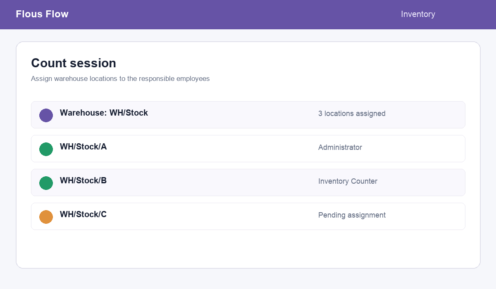
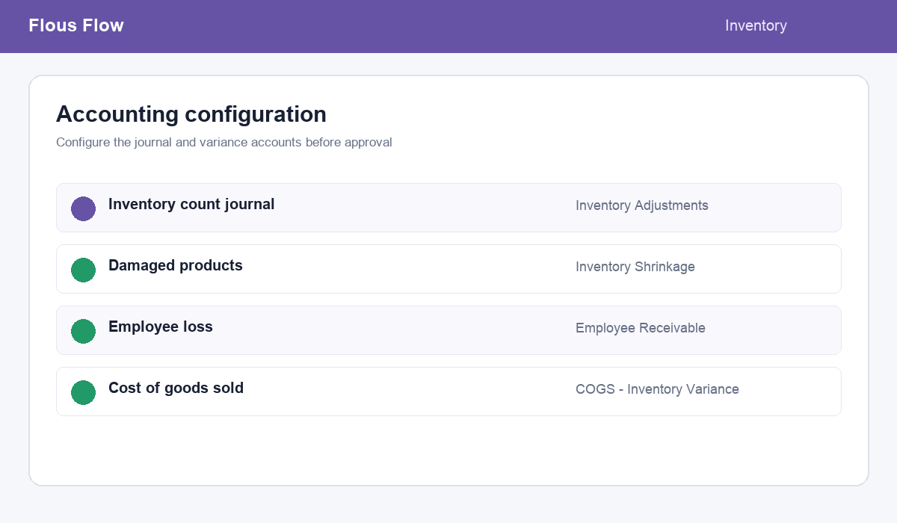

1
Assign by location
Create one session for a warehouse and assign each internal location to the responsible counter.
Controlled, auditable physical inventory counting for warehouses with multiple locations, assigned counters, supervisor review, and safe accounting adjustments.
Replace ad-hoc quantity edits with a clear count-to-approval workflow. Every variance is traceable to a session, location, user, reason, and accounting treatment.
Create one session for a warehouse and assign each internal location to the responsible counter.
Employees see only their sheets, scan or select products, and record counted quantities with on-hand context.
Consolidate differences, select a reason, approve, and apply the controlled inventory adjustment.


Configure the count journal and variance accounts from Inventory settings. The module validates configuration before posting and prevents direct manual stock quantity edits outside an approved Smart Inventory Count flow.
Odoo 20 Community · Inventory · Stock Accounting · Accounting. Install the module, configure the journal and accounts, then create the first count session.